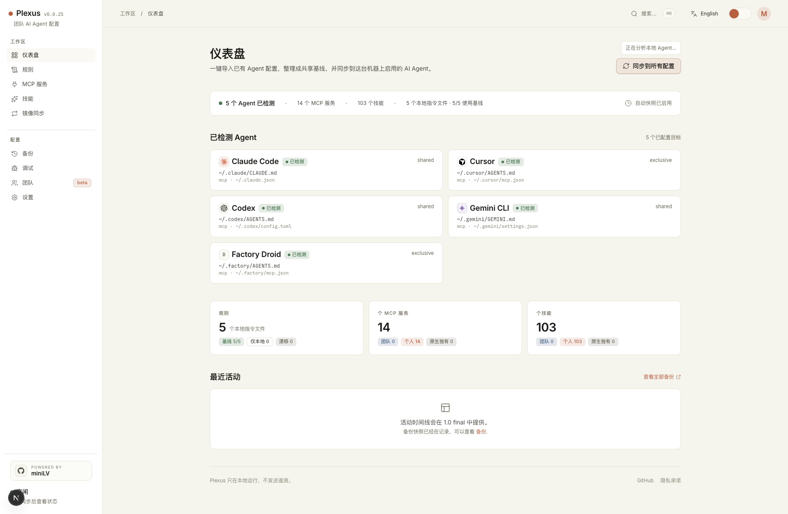

如果你同时使用 Claude Code、Cursor、Codex、Gemini CLI 或 Qwen Code，很快就会碰到同一个问题：
一个好用的 MCP Server、一份顺手的 CLAUDE.md 规则、或者一个团队 skill，
会慢慢分散到不同工具的原生文件里。你知道它们应该一致，但又不敢粗暴覆盖。
为什么配置漂移会越来越烦
- 你在 Claude Code 里改了一条规则，Cursor 和 Codex 还停在旧版本。
- 你刚在 Cursor 里补了一个 MCP Server，另一个工具里又忘了加。
- 每个工具的 skill / commands 目录不同，复制过去也不总是放心。
- 有些原生文件里还混着 auth、history、profile，这让“整文件覆盖”变得很冒险。
为什么不是 cp / dotfiles 就够了
如果每个目标文件都完全归你自己管，dotfiles 当然很好。但 AI coding tools 的现实更复杂：有的文件是专门给 MCP 用的，有的文件里还混着工具自己维护的状态。这个时候，单纯复制文件的风险会明显变高。
它做的事情更朴素：把本机的 canonical store 放在 ~/.config/plexus/，
再按不同工具的原生约束，把配置安全地投射回去。
Plexus 怎么处理这个问题
- Rules 和 Skills 优先用 symlink / copy 维持一份清晰的本地基线。
- 对 Cursor、Factory Droid 这类专用 MCP 文件，优先走 cache symlink / copy。
-
对
~/.claude.json、~/.codex/config.toml这类共享原生文件，只 partial-write Plexus 管理的 MCP section。 - 每次写回原生文件前自动 snapshot，真出问题还能从 Backups 页面恢复。

什么场景下最适合先试 Plexus
- 你已经同时用两个以上 AI coding tools，而且手动同步过不止一次。
- 你最怕的是覆盖掉 auth、history、profile 这种工具自己维护的内容。
- 你希望团队 rules / skills / MCP baseline 能分层管理，而不是到处复制。
几个最常见的问题
如果所有目标文件都完全归你自己维护，dotfiles 当然很好。但 Claude Code、 Codex 这类工具的共享原生文件里，往往还混着 auth、history、profile 或其他工具状态。Plexus 的价值不在“再造一种配置格式”，而在于尽量保留这些原生契约，只改它真正管理的那一小部分。
Plexus 的目标恰恰是避免这种风险。对共享原生文件，它只 partial-write 自己管理的 MCP section；对专用 MCP 文件、Rules、Skills，则优先走 symlink / copy 这类更容易回退的方式。 每次写回前也会先做 snapshot。
不会。Plexus 是 local-first 的配置控制台，不执行 MCP Server，也不是 secrets manager。 它做的是导入、整理、预览和安全写回，让不同工具继续读取自己的原生文件。
最快体验方式
npx -y plexus-agent-config@latest start